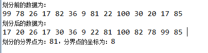

一、概要：
本稿では、一般的なソートアルゴリズムの原理とJava実装を示します。一般的な単純ソートおよび高度なソートアルゴリズム、その他よく使われるアルゴリズム知識を含みます。
- 単純ソート：バブルソート、選択ソート、挿入ソート
- 高度なソート：クイックソート、マージソート、シェルソート
- 関連アルゴリズム知識分割、再帰、二分探索
二、バブルソート：
（1）原理：
- 1、最初のデータから始めて、2番目のデータと比較し、2番目のデータが最初のデータより小さい場合は、2つのデータの位置を交換します。
- 2、ポインタを最初のデータから2番目のデータに移動し、2番目のデータと3番目のデータを比較し、3番目のデータが2番目のデータより小さい場合は、2つのデータの位置を交換します。
- 3、同様に続けて、1巡目のソートを完了します。1巡目のソート終了後、最大の要素が一番右に移動されます。
- 4、上記の手順で2巡目のソートを行い、2番目に大きい要素を右から2番目の位置に置きます。
- 5、上記の手順を繰り返します。1巡ごとに比較回数が1回ずつ減ります。
（2）例：
ソート対象データ：7, 6, 9, 8, 5,1
1巡目のソート手順：
指针先指向7，7和6比较，6<7，交换6和7的位置，结果为：6,7,9,8,5,1 指针指向第二个元素7，7和9比较，9>7，不用交换位置，结果仍为：6,7,9,8,5,1 指针指向第三个元素9，比较9和8，8<9，交换8和9的位置，结果为：6,7,8,9,5,1 指针指向第四个元素9，比较9和5，5<9，交换5和9，结果为：6,7,8,5,9,1 指针指向第五个元素9，比较9和1，1<9，交换1和9的位置，结果为6,7,8,5,1,9
1巡目のソート終了後、最大の数値9が一番右に移動されます。
2巡目のソートを行います。手順は上記と同じですが、最大の9がすでに一番右にあるため9を比較する必要がなく、比較が1回少なくなります。2巡目終了時の結果は、6,7,5,1,8,9 です。
3巡目の結果：6,5,1,7,8,9
4巡目の比較結果：5,1,6,7,8,9
5巡目の比較結果：1,5,6,7,8,9
最終的なソート結果は、1,5,6,7,8,9 です。以上のことから、N個のデータをソートするにはN-1巡のソートが必要であり、i巡目のソートに必要な比較回数はN-i回です。
（3）コーディングの考え方：
2重ループが必要です。1つ目のループiはソートの巡数を表し、2つ目のループjは比較回数を表します。
（4）コード実装：
例
（5）選択ソートのまとめ：
N個の要素はN-1巡のソートが必要です；
i巡目はN-i回の比較が必要です；
N個の要素のソートには、n（n-1）/2回の比較が必要です；
選択ソートのアルゴリズム複雑度は依然としてO（n*n）です；
バブルソートと比較すると、選択ソートは交換回数が大幅に減るため、バブルソートより高速です。
四、挿入ソート
挿入ソートは単純ソートの中で最も高速なソートアルゴリズムです。時間複雑度は依然としてO(n*n)ですが、バブルソートや選択ソートよりはるかに高速です。
（1）原理：
- 1、ポインタをある要素に向け、その要素の左側の要素がすべて整列していると仮定し、その要素を取り出します。次に、右から左の順に左の要素と比較し、自分より大きい要素があればその要素を右に移動します。自分より小さい要素を見つけるか、最左端に到達して左側の要素がすべて自分より大きいことがわかったら停止します；
- 2、このとき空き位置ができるので、その要素を空き位置に置きます。このとき、その要素の左側の要素はすべてそれより小さく、右側の要素はすべてそれより大きくなります；
- 3、ポインタを1つ後ろに移動し、上記の手順を繰り返します。1巡操作するごとに、左側の整列済み要素が1つ増え、右側の未整列要素が1つ減ります。
（2）例：
比較対象データ：7, 6, 9, 8, 5,1
- 1巡目：ポインタを2番目の要素6に向け、6の左側の要素は整列済みと仮定します。6を取り出して、7,_,9,8,5,1 となります。7から始めて6と7を比較すると、7>6 であることがわかります。7を右に移動して、_,7,9,8,5,1 となります。6を7の前の空き位置に挿入すると、結果は 6,7,9,8,5,1 です。
- 2巡目：ポインタを3番目の要素9に向け、このとき左側の要素6,7は整列済みです。9を取り出して、6,7,_,8,5,1 となります。7から順に9と比較すると、9の左側の要素はすべて9より小さいことがわかるため、移動は不要で、9を空き位置に置きます。結果は依然として 6,7,9,8,5,1 です。
- 3巡目：ポインタを4番目の要素8に向け、このとき左側の要素6,7,9は整列済みです。8を取り出して、6,7,9,_,5,1 となります。9から順に8と比較すると、8<9 であることがわかるので、9を後ろに移動して、6,7,_,9,5,1 となります。8を空き位置に挿入すると、結果は 6,7,8,9,5,1 です。
- 4巡目：ポインタを5番目の要素5に向け、このとき左側の要素6,7,8,9は整列済みです。5を取り出して、6,7,8,9,_,1 となります。9から順に5と比較すると、5は左側のすべての要素より小さいことがわかるので、5の左側の要素をすべて右に移動して、_,6,7,8,9,1 となります。5を空き位置に置くと、結果は 5,6,7,8,9,1 です。
- 5巡目：上記と同様に、1が最左端に移動され、最終結果は 1,5,6,7,8,9 です。
（3）コーディング分析：
2重ループが必要です。1つ目のループindexは上記の例のポインタを表し、座標1から始まる各要素を走査します。2つ目のループは leftindex=index-1 から始まり、leftindex-- で左へ走査し、各要素を i 位置の要素と比較します。j 位置の要素が i 位置の要素より小さいか、leftindex<0 になるまで続けます。i から j までの各要素を右に移動させ、最後に index 位置の要素を leftindex 位置の空き位置に置きます。
（4）コード実装：
例
（5）挿入ソートの分析：
時間複雑度は、依然として2重ループが必要なため、挿入ソートの時間複雑度も依然としてO(n*n)です。
比較回数：1巡目のソートでは、挿入ソートは最大1回比較します。2巡目のソートでは最大2回比較します。同様に、最後の巡目では最大N-1回比較します。したがって、挿入ソートの最大比較回数は 1+2+...+N-1=N*(N-1)/2 です。それでも、実際には挿入ソートがこの回数だけ比較することはほとんどありません。左側に対象要素より小さい要素が見つかると比較が停止するためです。よって、挿入ソートの平均比較回数は N*(N-1)/4 です。
移動回数：挿入ソートの移動回数は比較回数とほぼ同じですが、移動の速度は交換の速度よりはるかに速いです。
以上のことから、挿入ソートの速度はバブルソートの約2倍（比較回数が半分）で、選択ソートよりやや速いです。ほぼ整列済みのデータに対しては、挿入ソートは非常に高速であり、単純ソートの中で最も効率的なソートアルゴリズムです。
クイックソート、バブルソート、選択ソート、挿入ソート、マージソート
一、概要：
前文では、一般的な単純アルゴリズムとして、バブルソート、選択ソート、挿入ソートを紹介しました。本稿では、高度なソートアルゴリズムとして、クイックソートとマージソートを紹介します。アルゴリズムの紹介を始める前に、高度なアルゴリズムに必要な基礎知識である分割、再帰を紹介し、あわせて二分探索アルゴリズムも紹介します。
二、分割：
分割はクイックソートの前提であり、データを2つのグループに分け、特定の値より大きいデータを一方のグループに、特定の値より小さいデータを他方のグループに入れる。クイックソートは分割と再帰操作によって完成する。
（1）原理：
閾値を定義し、それぞれ最左端と最右端から中央に向かって要素を走査する。左側は閾値より大きいデータを見つけたら停止し、右側は閾値より小さいデータを見つけたら停止する。このとき左右ともまだ中央に達していなければ、左側の閾値より大きいデータと右側の閾値より小さいデータを交換する。上記の処理を左ポインタと右ポインタが交差するまで繰り返す。このとき左側のデータはすべて閾値より小さく、右側のデータはすべて閾値より大きくなり、分割が終了する。分割終了後、データは依然として順序付けられていないが、順序付けに近づいている。
（2）例：
分割対象データ：7, 6, 9, 8, 5, 1、閾値を5とする
第一ラウンド：左ポインタは7を指し、右ポインタは1を指す。左ポインタを右へ移動し、右ポインタを左へ移動すると、左側で最初に5より大きい要素7と、右側で最初に5より小さい要素1が見つかる。7と1の位置を交換する。結果：1,6,9,8,5,7。
第二ラウンド：6から5より大きい数字を探すと6が見つかる。右側は5から5より小さい数字を探すと1が見つかる。しかしこのとき、6は1の右側にあるため、すなわち右ポインタ < 左ポインタとなり、左右のポインタが交差する。ここで分割が終了する。元の数列は2つの部分に分割される。左側の部分数列は1つの要素のみ、すなわち1であり、これは閾値より小さい部分数列である。右側の部分数列は5つの要素を含み、すべて閾値5より大きい要素である。
（3）コード実装：
例
実行結果は：

原文リンク：https://www.cnblogs.com/bjh1117/p/8335628.html